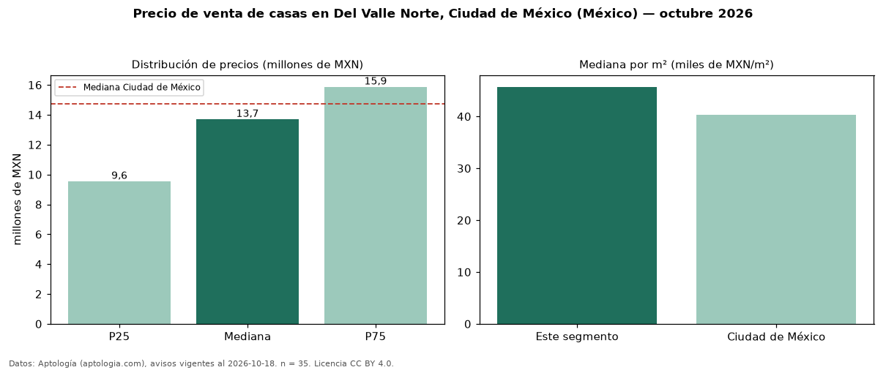

Precio de venta de casas en Del Valle Norte, Ciudad de México (México) — octubre 2026
En Del Valle Norte, Ciudad de México (México), la mediana de precio de venta de casas es MXN 13,70 millones, según 35 avisos vigentes. Frente a la mediana de Ciudad de México para casas (MXN 14,75 millones), queda 7 % por debajo. Por metro cuadrado, la mediana es MXN 45.707/m² (n = 30 avisos con área), 13 % por encima de Ciudad de México (MXN 40.359/m²). El área mediana anunciada es 298 m². El segmento con más oferta es el de 3 o más habitaciones (28 avisos, mediana MXN 14,13 millones). Por precio mediano es el puesto 13 de 26 colonias de Ciudad de México con al menos 30 avisos de casas en venta (MXN): en la franja media. La mitad central de los avisos va de MXN 9,55 millones a MXN 15,87 millones (razón 1,7), una dispersión moderada. Datos: Aptología (aptologia.com), CC BY 4.0 — https://www.aptologia.com/. Archivos: PDF, CSV con las cifras y gráfica PNG.

| Avisos únicos | 35 |
|---|---|
| Percentil 25 | COP 9.550.000 |
| Mediana | COP 13.700.000 |
| Percentil 75 | COP 15.870.000 |
| Mediana por m² | COP 45.706 |
Fuente: avisos vigentes de portales inmobiliarios recopilados por Aptología, deduplicados (mínimo 30 avisos únicos por celda). Precios pedidos, no cerrados. Fecha: 2026-10-18.